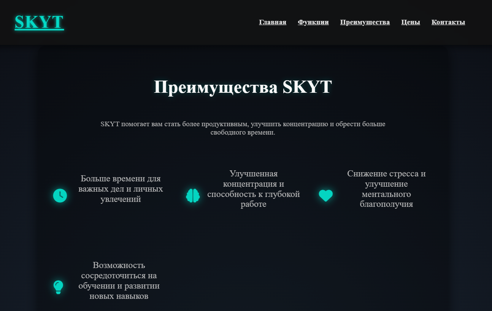
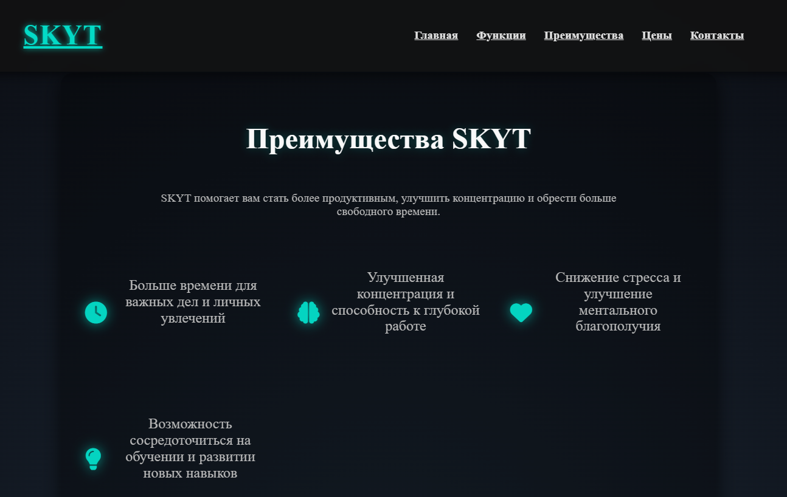
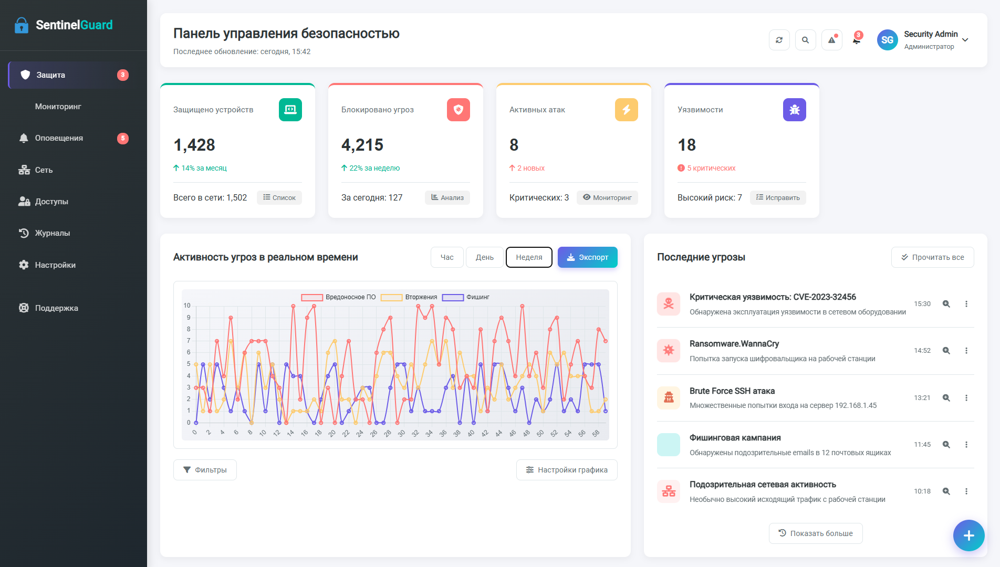
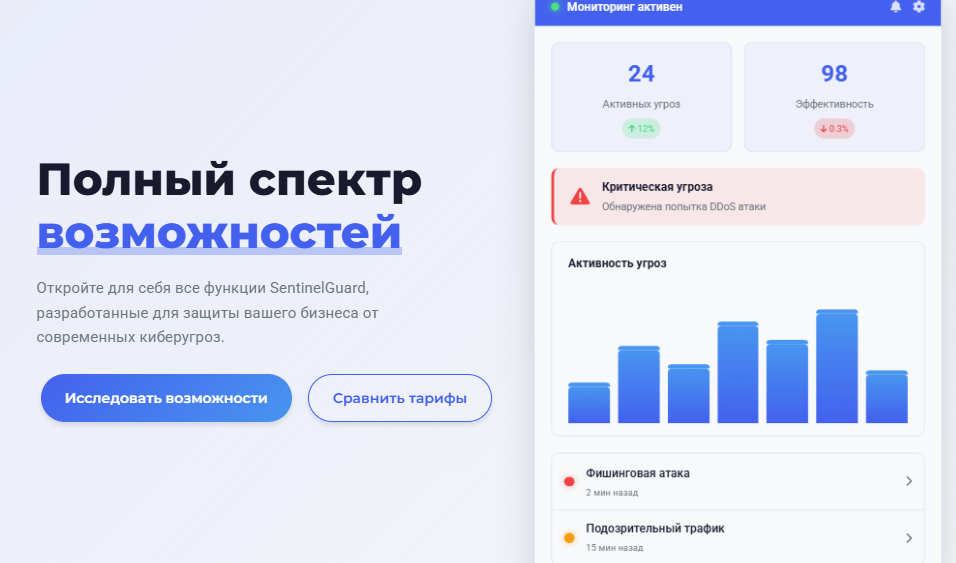

Мои проекты
Описание проекта
Программа для контроля своего времени с интуитивным интерфейсом и подробной статистикой. Помогает эффективно планировать и отслеживать затраты времени.
Основные функции:
- Учет времени по проектам и задачам
- Графики и отчеты по продуктивности
- Экспорт данных в CSV
- Настраиваемые категории и теги
Использованные технологии
Скриншоты проекта:
 

Описание проекта
Администратор сети, разработанный на Python и NMap. Предназначен для мониторинга и управления сетевой безопасностью.
Основные функции:
- Сканирование сети и устройств
- Обнаружение открытых портов
- Мониторинг активности в сети
- Генерация отчетов о безопасности
Использованные технологии
Скриншоты проекта:

